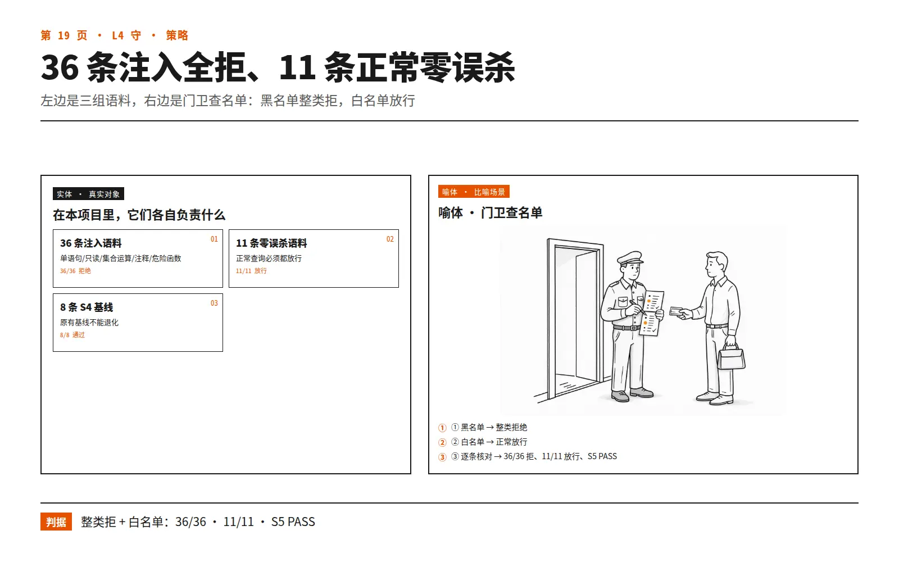
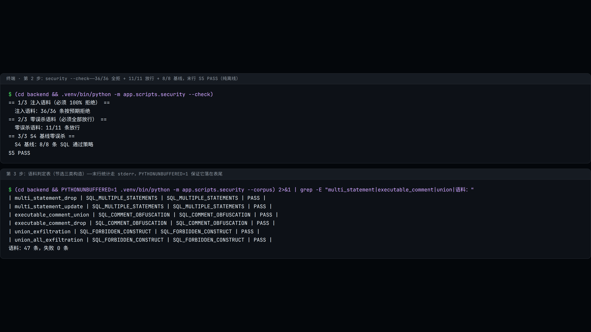

练本 · 阅读版（md 正典派生，改内容请改 manual/page-19.md）
第 19 页 · 守策略：36 条注入全拒、11 条正常零误杀
城市坐标 · L4 城市安防 · 安检｜36 条夹带全拦、11 条正常零误杀：安检口按规矩放行。
前置：L4（守）第二页。本页一条服务都不用——判据只读
contracts/、fixtures/，第 2 步还读 S4 基线backend/tests/generate/baseline.yaml；不访问网络，不需要 MySQL、
.env、模型 key，但要用backend/.venv（第 0 页make install建好，缺了先回第 0 页补）。命令都在仓库根目录、同一个终端里整段连续执行；括号是子 shell，跑完你还在仓库根目录。第 18 页守的是账号（数据库层写不了），本页守的是策略（危险 SQL 根本到不了执行）。
这一页构建什么
用 36 条注入语料 + 11 条“长得像正常查询”的反向语料，审 SQL 在执行前按类别拦下的那道关（单语句、只读、集合运算、可执行注释、危险函数、白名单）。
判据可重放：36/36 拒绝 + 11/11 放行 + 8/8 基线。
心智模型：整类拒 + 白名单，比黑名单逐个补更可靠；误杀也是事故。

猜一猜
- 36 条注入里，靠“整类拒”（集合运算 / 可执行注释 / 危险函数——构造本身不许）挡下的有几条：4 条、10 条、还是 36 条？
- 把
contracts/sql.policy.yaml的forbid_set_operations关掉，重跑判据会漏几条？那 11 条正常 SQL 会不会跟着被误杀？
动手
第 1 步：拍快照。 拆一刀要改契约，先留退路（同名快照会被拒，重做本页换个名字——换了名字，下文出现的 p19-before 也一起替换；回显 已保存快照 "p19-before"：169 个文件。，数字因工作区而异）：
scripts/lab save p19-before
第 2 步：跑离线门禁。 三段各是一个判据：36 条注入必须按精确原因码全拒、11 条正常 SQL 必须全放、S4 基线里真产出 SQL 的 8 题必须全部通过策略（另 2 题在生成阶段就拒答，没有 SQL 可过）。退出码 0 才算过：
(cd backend && .venv/bin/python -m app.scripts.security --check)
第 3 步：打判定表，看每条注入被归到哪个原因码。 表共 47 行（36 拒 + 11 放；看全表就把下面的 grep 那段去掉）；管道里的 grep 只留三类构造（多语句 / 可执行注释 / 集合运算）。
两个细节：末行统计走 stderr，2>&1 把它并回来；PYTHONUNBUFFERED=1 保证汇总落在表尾（去掉它，汇总会先跑到表头——stdout 被管道缓冲、stderr 不会）。
退出码：这一步全 PASS 时退出码 0，有 FAIL 时会非 0：
(cd backend && PYTHONUNBUFFERED=1 .venv/bin/python -m app.scripts.security --corpus) 2>&1 | grep -E "multi_statement|executable_comment|union|语料："
第 4 步（可选）：make stage5。 前提：本机有 uv 且 backend/.venv 依赖已装好；不需要 MySQL / .env / 模型 key。
先自查：(cd backend && .venv/bin/python -c "import app, app.security") && command -v uv（退出码 0 才继续；非 0 就跳过本步，跳过不影响第 2 步的判据：第 2、3 步只用 .venv，不经过 uv）。
跑多久：本机实测约 44 秒（先跑安全测试 179 passed + 2 skipped，再跑全后端 843 条 = 813 passed + 30 skipped、约 40 秒），末行 S5 PASS：
make stage5
Makefile 直接调的 stage* 全走 uv run --frozen，不会改 backend/uv.lock；只有脚本里的裸 uv run（make stage3、make stage0-ui、make stage6-ui）或手敲 uv run 会。
lock 变脏怎么办：它不在 lab 白名单里，scripts/lab reset 不管它——若 git status 里确实出现 backend/uv.lock 变脏（本机实测 1,250 行 registry / packages 地址从 pypi.org 换成镜像源），用 git checkout -- backend/uv.lock 还原。
你应该看到
第 2–4 步（# 开头是标注，不是程序输出；秒数随机器变）：
# 第 2 步
== 1/3 注入语料（必须 100% 拒绝） ==
注入语料：36/36 条按预期拒绝
== 2/3 零误杀语料（必须全部放行） ==
零误杀语料：11/11 条放行
== 3/3 S4 基线零误杀 ==
S4 基线：8/8 条 SQL 通过策略
S5 PASS
# 第 3 步（节选）
| multi_statement_drop | SQL_MULTIPLE_STATEMENTS | SQL_MULTIPLE_STATEMENTS | PASS |
| multi_statement_update | SQL_MULTIPLE_STATEMENTS | SQL_MULTIPLE_STATEMENTS | PASS |
| executable_comment_union | SQL_COMMENT_OBFUSCATION | SQL_COMMENT_OBFUSCATION | PASS |
| executable_comment_drop | SQL_COMMENT_OBFUSCATION | SQL_COMMENT_OBFUSCATION | PASS |
| union_exfiltration | SQL_FORBIDDEN_CONSTRUCT | SQL_FORBIDDEN_CONSTRUCT | PASS |
| union_all_exfiltration | SQL_FORBIDDEN_CONSTRUCT | SQL_FORBIDDEN_CONSTRUCT | PASS |
语料：47 条，失败 0 条
# 第 4 步（节选）
179 passed, 2 skipped in 1.29s
813 passed, 30 skipped in 37.45s
S5 PASS

对账
- 猜 1：10 条。 按原因码数：
SQL_COMMENT_OBFUSCATION2 条 +SQL_FORBIDDEN_CONSTRUCT8 条（集合运算 2 + 危险函数 6）。剩下 26 条不是靠类别规则：21 条是结构（18 条“不是只读查询” + 3 条多语句），5 条是白名单（表 4 + 列 1）。类别规则不到三分之一，却接住了最会变形的那些载荷。 - 猜 2：漏到执行 0 条，漏的是 2 条原因码。 关掉
forbid_set_operations后，2 条 UNION 仍被拒——策略里“根节点必须是 SELECT”的规则兜住了——但原因码从SQL_FORBIDDEN_CONSTRUCT退化成SQL_NOT_READ_ONLY，门禁照样FAIL: 2 项。11/11 和 8/8 一位没动：删规则只会放宽，不可能造成误杀。 - 整类拒 vs 逐个补。 黑名单是“见过一个补一个”：只拒
UNION SELECT，语料里的UNION ALL就过去了；只拒DROP，/*! DROP ... */解析器看不见、服务端却会执行。- 类别规则按 AST 节点类型（
Union/Except/Intersect，在整棵树任意深度）或/*!的握手整类拒，变体一起死。 - 白名单同理：不列“危险表”，只允许契约里的表/列，
information_schema、mysql.user、secret_table自动被拒。
- 类别规则按 AST 节点类型（
- 零误杀为什么是硬要求。 门禁有两种错：漏拦（放行注入）和误杀（正常查询被拒）。误杀让问数直接失败，还会训练用户去关规则——最后回到没有防线。
- 11 条 allow 语料专钉容易误杀的地方：字符串里的分号
'a;b'、块注释里的; DROP（服务端不执行，策略也不能当第二条语句）、中文投影别名ORDER BY 销量、SELECT *、子查询。 - 策略“先 AST 后词法”，就是为了不看见分号就拒。
- 11 条 allow 语料专钉容易误杀的地方：字符串里的分号
- 原因码是契约。
--check不只要求“拒”，还要求原因码精确匹配（backend/app/scripts/security.py逐条比对）；- 码表在
contracts/sql.policy.yaml的errors.reason_codes，执行器对外只暴露通道码SQL_REJECTED，细码放在reason_code。 - 拆一刀实测“拒仍是拒、码变了”也会红——下游按码决定重试与展示（第 16、17 页），码漂移就是事故。
- 码表在
- 和第 16 页的分工。 第 16 页的静态校验问“对不对”（列、指标、值域、行数、排序），本页策略问“危不危险”（单语句、只读、集合运算、注释、危险函数、表白名单）；
- 两者都在连库前，是两层网。
- 第 16 页拆掉列存在校验时，正是本页的列白名单接住了它（
SQL_UNKNOWN_COLUMN退化成SQL_REJECTED）；第 18 页的只读账号是第三层——策略管“能不能构造”，账号管“能不能写”。
你现在拥有：一条能被别人重放的安全判据（36/36 + 11/11 + 8/8），和一句可复用的判断：追着已知载荷打补丁永远慢一步；按类别拒 + 白名单放，才能让变体一起死、又不误杀正常查询。
拆一刀
打开 contracts/sql.policy.yaml，找到 statement: 段里 L31 的 forbid_set_operations: true（2 空格缩进；4 行后还有一个 forbid_executable_comments: true，别改错），只把这处改成 false。
怎么验：重跑第 2 步的判据（tail -8 只看结尾；管道末尾是 tail，门禁本体的退出码靠命令里的 gate= 打出来）：
(cd backend && PYTHONUNBUFFERED=1 .venv/bin/python -m app.scripts.security --check) 2>&1 | tail -8; echo "gate=${PIPESTATUS[0]}"
注入语料：34/36 条按预期拒绝
== 2/3 零误杀语料（必须全部放行） ==
零误杀语料：11/11 条放行
== 3/3 S4 基线零误杀 ==
S4 基线：8/8 条 SQL 通过策略
FAIL: 2 项不符合预期
- union_exfiltration: 原因码不符（期望 SQL_FORBIDDEN_CONSTRUCT，实际 SQL_NOT_READ_ONLY）
- union_all_exfiltration: 原因码不符（期望 SQL_FORBIDDEN_CONSTRUCT，实际 SQL_NOT_READ_ONLY）
gate=1
退出码怎么看：末行 gate=1 是门禁本体的退出码——管道末尾是 tail，不带 gate= 直接看 $? 只会拿到它的 0（门禁本体看 PIPESTATUS[0]）。
漏了什么：漏到执行的是 0 条（根节点规则又把两条 UNION 兜了一次），漏掉的是这 2 条的原因码——判定表上它们从 PASS 变 FAIL，门禁红。
再确认一次不误杀：11/11 与 8/8 一位没动。
还原并回绿（reset 会先拍一张 pre-reset-<时间戳> 安全快照，只贴末两行；这里的“完全一致”只算 lab 白名单文件——第 4 步跑过的话 backend/uv.lock 仍要按上面单独还原）：
scripts/lab reset p19-before --yes
(cd backend && .venv/bin/python -m app.scripts.security --check | tail -1)
现在工作区与快照 "p19-before" 完全一致。
S5 PASS
结论：整类拒的开关拆掉，门禁都会红，但红法不同——集合运算丢的是“原因码”，可执行注释丢的是“执行层”，后者才是真正的事故。
回绿后还想看“真的漏”：把 forbid_executable_comments 改成 false 重跑同一条判据，两行会变成 竟然被放行了（/*! ... */ 服务端会执行、解析器看不见，没有第二道网）；看完再 scripts/lab reset p19-before --yes 回绿。
为什么：契约在，判定就得同时满足“拒”和“码对”——这正是白名单 + 类别规则比“黑名单逐个补”可靠的原因。